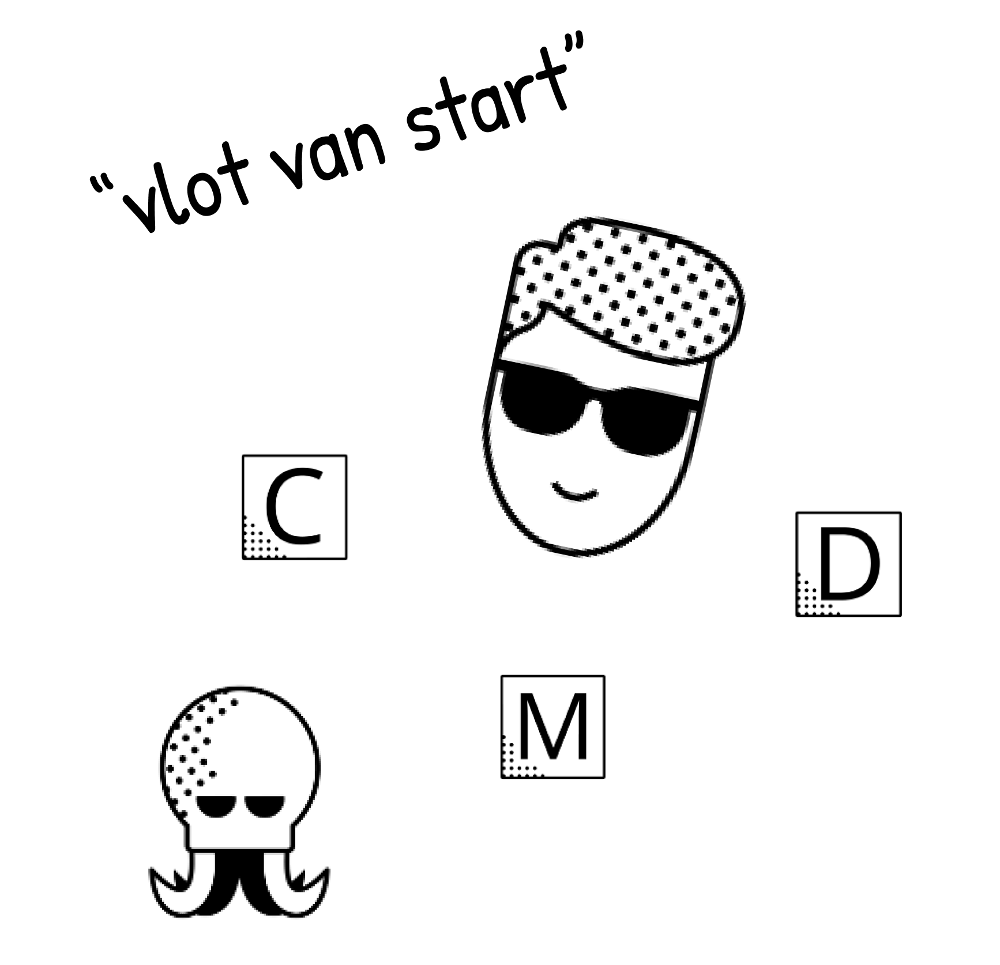

Welkom bij de Digital Onboarding opdracht voor Studieloopbaan begeleiding! Deze opdracht is ontworpen om eerstejaarsstudenten te helpen bij het verkrijgen van een gemakkelijk inzicht in de belangrijkste aspecten waarmee ze te maken krijgen tijdens hun studie. Via interactieve modules en praktische oefeningen ontdek je de essentiële kennis en vaardigheden die nodig zijn voor een succesvolle start als eerstejaarsstudent.
Aan de slag